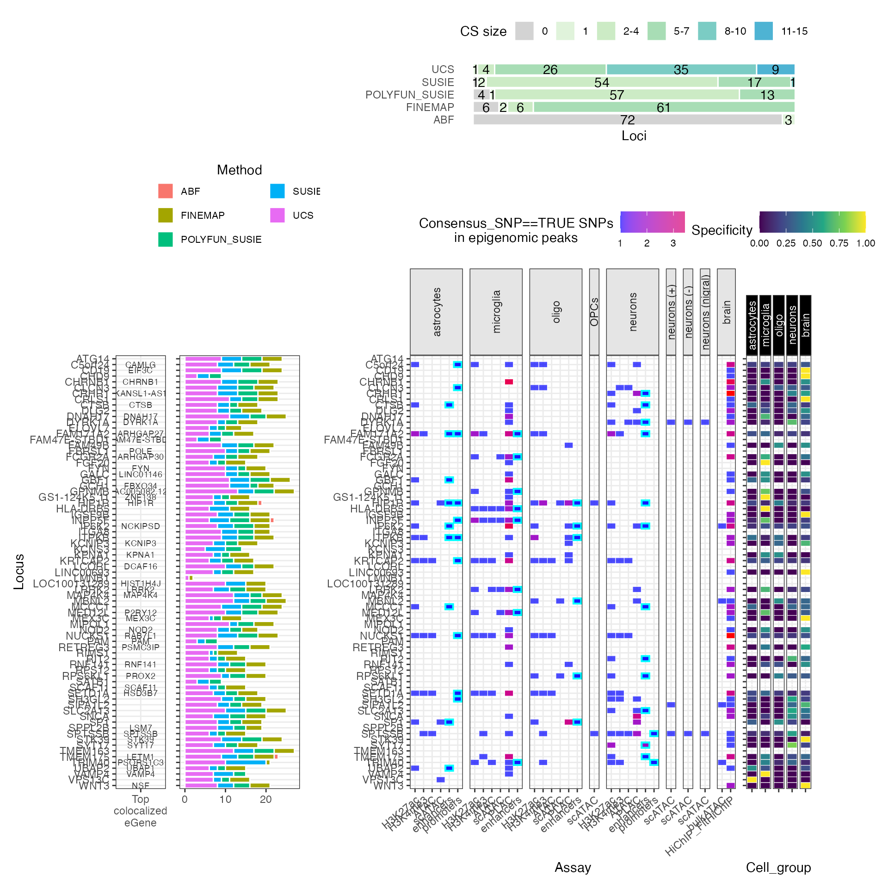

Summarise
Author: Brian M. Schilder
Author: Brian M. Schilder
Updated: Mar-16-2026
Source: Updated: Mar-16-2026
vignettes/summarise.Rmd
summarise.Rmd## ## ── 🦇 🦇 🦇 e c h o l o c a t o R 🦇 🦇 🦇 ─────────────────────────────────## ## ── v2.0.5 ──────────────────────────────────────────────────────────────────────## ## ────────────────────────────────────────────────────────────────────────────────## ⠊⠉⠡⣀⣀⠊⠉⠡⣀⣀⠊⠉⠢⣀⡠⠊⠉⠢⣀⡠⠊⠉⠢⣀⡠⠊⠉⠢⣀⡠⠊⠉⠢⣀⡠⠊⠉⠢⣀⡠
## ⠌⢁⡐⠉⣀⠊⢂⡐⠑⣀⠊⢂⡐⠑⣀⠊⢂⡐⠑⣀⠊⢂⡐⠑⣀⠊⢂⡐⠑⣀⠉⢂⡈⠑⣀⠉⢄⡈⠡⣀
## ⠌⡈⡐⢂⢁⠒⡈⡐⢂⢁⠒⡈⡐⢂⢁⠑⡈⡈⢄⢁⠡⠌⡈⠤⢁⠡⠌⡈⠤⢁⠡⠌⡈⡠⢁⢁⠊⡈⡐⢂
## ⠌⡈⡐⢂⢁⠒⡈⡐⢂⢁⠒⡈⡐⢂⢁⠑⡈⡈⢄⢁⠡⠌⡈⠤⢁⠡⠌⡈⠤⢁⠡⠌⡈⡠⢁⢁⠊⡈⡐⢂
## ⠌⢁⡐⠉⣀⠊⢂⡐⠑⣀⠊⢂⡐⠑⣀⠊⢂⡐⠑⣀⠊⢂⡐⠑⣀⠊⢂⡐⠑⣀⠉⢂⡈⠑⣀⠉⢄⡈⠡⣀
## ⠊⠉⠡⣀⣀⠊⠉⠡⣀⣀⠊⠉⠢⣀⡠⠊⠉⠢⣀⡠⠊⠉⠢⣀⡠⠊⠉⠢⣀⡠⠊⠉⠢⣀⡠⠊⠉⠢⣀⡠
## ⓞ If you use echolocatoR or any of the echoverse subpackages, please cite:
## ▶ Brian M Schilder, Jack Humphrey, Towfique
## Raj (2021) echolocatoR: an automated
## end-to-end statistical and functional
## genomic fine-mapping pipeline,
## Bioinformatics; btab658,
## https://doi.org/10.1093/bioinformatics/btab658
## ⓞ Please report any bugs/feature requests on GitHub:
## ▶
## https://github.com/RajLabMSSM/echolocatoR/issues
## ⓞ Contributions are welcome!:
## ▶
## https://github.com/RajLabMSSM/echolocatoR/pulls
has_internet <- tryCatch(
!is.null(curl::nslookup("github.com", error = FALSE)),
error = function(e) FALSE
)Summarise
Using pre-merged data for vignette speed.
merged_DT <- echodata::get_Nalls2019_merged()
get_SNPgroup_counts()
Get the number of SNPs for each SNP group per locus. It also prints
the mean number of SNPs for each SNP group across all loci.
NOTE: You will need to make sure to set
merge_finemapping_results(minimum_support=1) in the above
step to get accurate counts for all SNP groups.
snp_groups <- echodata::get_SNPgroup_counts(merged_DT = merged_DT)## All loci (75) :## Total.SNPs nom.sig.GWAS sig.GWAS
## 4948.16 924.68 82.36
## CS Consensus topConsensus
## 7.88 2.69 1.47
## topConsensus.leadGWAS
## 0.41## Loci with at least one Consensus SNP (69) :## Total.SNPs nom.sig.GWAS sig.GWAS
## 5019.07 911.41 84.28
## CS Consensus topConsensus
## 7.77 2.93 1.59
## topConsensus.leadGWAS
## 0.45
get_CS_counts()
Count the number of tool-specific and UCS Credible Set SNPs per locus.
UCS_counts <- echodata::get_CS_counts(merged_DT = merged_DT)
knitr::kable(head(UCS_counts, 10))| Locus | ABF.CS_size | SUSIE.CS_size | POLYFUN_SUSIE.CS_size | FINEMAP.CS_size | mean.CS_size | UCS.CS_size |
|---|---|---|---|---|---|---|
| GPNMB | 0 | 4 | 5 | 5 | 0 | 13 |
| MAP4K4 | 0 | 4 | 3 | 5 | 0 | 12 |
| MBNL2 | 0 | 4 | 4 | 5 | 0 | 12 |
| TMEM163 | 0 | 5 | 5 | 5 | 0 | 12 |
| CRLS1 | 0 | 3 | 4 | 5 | 0 | 11 |
| DNAH17 | 0 | 5 | 4 | 5 | 0 | 11 |
| GBF1 | 0 | 5 | 5 | 5 | 0 | 11 |
| GCH1 | 0 | 5 | 2 | 4 | 0 | 11 |
| MIPOL1 | 0 | 2 | 4 | 5 | 0 | 11 |
| FBRSL1 | 0 | 3 | 3 | 5 | 0 | 10 |
Plot
- The following functions each return a list containing both the
...$plotand the...$dataused to make the plot. - Where available,
snp_filterallows user to use any filtering argument (supplied as a string) to subset the data they want to use in the plot/data.
Colocalization results
If you ran colocalization tests with echolocatoR (via
catalogueR) you can use those results to come up with a top
QTL nominated gene for each locus (potentially implicating that gene in
your phenotype).
coloc_res <- echodata::get_Nalls2019_coloc()Super summary plot
super_plot <- echoannot::super_summary_plot(merged_DT = merged_DT,
coloc_results = coloc_res,
plot_missense = FALSE)## + SUMMARISE:: Nominating genes by top colocalized eQTL eGenes## Warning in ggplot2::geom_bar(stat = "identity", color = "white", size = 0.05): Ignoring unknown parameters: `size`
## Ignoring unknown parameters: `size`## Importing previously downloaded files: /Users/bschilder/Library/Caches/org.R-project.R/R/echoannot/NOTT2019_epigenomic_peaks.rds## ++ NOTT2019:: 634,540 ranges retrieved.## Converting dat to GRanges object.## 113 query SNP(s) detected with reference overlap.## ++ NOTT2019:: Getting regulatory regions data.## Importing Astrocyte enhancers ...## Importing Astrocyte promoters ...## Importing Neuronal enhancers ...## Importing Neuronal promoters ...## Importing Oligo enhancers ...## Importing Oligo promoters ...## Importing Microglia enhancers ...## Importing Microglia promoters ...## Converting dat to GRanges object.
## Converting dat to GRanges object.## 48 query SNP(s) detected with reference overlap.## ++ NOTT2019:: Getting interaction anchors data.## Importing Microglia interactome ...## Importing Neuronal interactome ...## Importing Oligo interactome ...## Converting dat to GRanges object.## 52 query SNP(s) detected with reference overlap.## Converting dat to GRanges object.## 44 query SNP(s) detected with reference overlap.## CORCES2020:: Extracting overlapping cell-type-specific scATAC-seq peaks## Converting dat to GRanges object.## 13 query SNP(s) detected with reference overlap.## CORCES2020:: Annotating peaks by cell-type-specific target genes## CORCES2020:: Extracting overlapping bulkATAC-seq peaks from brain tissue## Converting dat to GRanges object.## 4 query SNP(s) detected with reference overlap.## CORCES2020:: Annotating peaks by bulk brain target genes## Converting dat to GRanges object.## 70 query SNP(s) detected with reference overlap.## Converting dat to GRanges object.## 72 query SNP(s) detected with reference overlap.## + CORCES2020:: Found 142 hits with HiChIP_FitHiChIP coaccessibility loop anchors.## Warning: Using `size` aesthetic for lines was deprecated in ggplot2 3.4.0.
## ℹ Please use `linewidth` instead.
## ℹ The deprecated feature was likely used in the echoannot package.
## Please report the issue at <https://github.com/RajLabMSSM/echoannot/issues>.
## This warning is displayed once per session.
## Call `lifecycle::last_lifecycle_warnings()` to see where this warning was
## generated.## Warning: The `size` argument of `element_line()` is deprecated as of ggplot2 3.4.0.
## ℹ Please use the `linewidth` argument instead.
## ℹ The deprecated feature was likely used in the echoannot package.
## Please report the issue at <https://github.com/RajLabMSSM/echoannot/issues>.
## This warning is displayed once per session.
## Call `lifecycle::last_lifecycle_warnings()` to see where this warning was
## generated.## Warning: `aes_string()` was deprecated in ggplot2 3.0.0.
## ℹ Please use tidy evaluation idioms with `aes()`.
## ℹ See also `vignette("ggplot2-in-packages")` for more information.
## ℹ The deprecated feature was likely used in the echoannot package.
## Please report the issue at <https://github.com/RajLabMSSM/echoannot/issues>.
## This warning is displayed once per session.
## Call `lifecycle::last_lifecycle_warnings()` to see where this warning was
## generated.## Warning: The dot-dot notation (`..count..`) was deprecated in ggplot2 3.4.0.
## ℹ Please use `after_stat(count)` instead.
## ℹ The deprecated feature was likely used in the echoannot package.
## Please report the issue at <https://github.com/RajLabMSSM/echoannot/issues>.
## This warning is displayed once per session.
## Call `lifecycle::last_lifecycle_warnings()` to see where this warning was
## generated.## Warning: Removed 83 rows containing missing values or values outside the scale range
## (`geom_bar()`).
Next steps
- Explore individual locus results:
vignette("explore_results") - Visualize loci:
vignette("plotting") - Run the full pipeline:
vignette("echolocatoR")
Session info
utils::sessionInfo()## R version 4.5.1 (2025-06-13)
## Platform: aarch64-apple-darwin20
## Running under: macOS Tahoe 26.3.1
##
## Matrix products: default
## BLAS: /Library/Frameworks/R.framework/Versions/4.5-arm64/Resources/lib/libRblas.0.dylib
## LAPACK: /Library/Frameworks/R.framework/Versions/4.5-arm64/Resources/lib/libRlapack.dylib; LAPACK version 3.12.1
##
## locale:
## [1] en_US.UTF-8/en_US.UTF-8/en_US.UTF-8/C/en_US.UTF-8/en_US.UTF-8
##
## time zone: America/New_York
## tzcode source: internal
##
## attached base packages:
## [1] stats graphics grDevices utils datasets methods base
##
## other attached packages:
## [1] echolocatoR_2.0.5 BiocStyle_2.38.0
##
## loaded via a namespace (and not attached):
## [1] splines_4.5.1 aws.s3_0.3.22
## [3] BiocIO_1.20.0 bitops_1.0-9
## [5] filelock_1.0.3 tibble_3.3.1
## [7] R.oo_1.27.1 cellranger_1.1.0
## [9] basilisk.utils_1.22.0 graph_1.88.1
## [11] rpart_4.1.24 XML_3.99-0.22
## [13] lifecycle_1.0.5 mixsqp_0.3-54
## [15] pals_1.10 OrganismDbi_1.52.0
## [17] ensembldb_2.34.0 lattice_0.22-9
## [19] MASS_7.3-65 backports_1.5.0
## [21] magrittr_2.0.4 Hmisc_5.2-5
## [23] openxlsx_4.2.8.1 sass_0.4.10
## [25] rmarkdown_2.30 jquerylib_0.1.4
## [27] yaml_2.3.12 otel_0.2.0
## [29] zip_2.3.3 reticulate_1.45.0
## [31] ggbio_1.58.0 gld_2.6.8
## [33] mapproj_1.2.12 DBI_1.3.0
## [35] RColorBrewer_1.1-3 maps_3.4.3
## [37] abind_1.4-8 expm_1.0-0
## [39] GenomicRanges_1.62.1 purrr_1.2.1
## [41] R.utils_2.13.0 AnnotationFilter_1.34.0
## [43] biovizBase_1.58.0 BiocGenerics_0.56.0
## [45] RCurl_1.98-1.17 nnet_7.3-20
## [47] VariantAnnotation_1.56.0 IRanges_2.44.0
## [49] S4Vectors_0.48.0 echofinemap_1.0.0
## [51] echoLD_0.99.12 catalogueR_2.0.1
## [53] irlba_2.3.7 pkgdown_2.2.0
## [55] echodata_1.0.0 piggyback_0.1.5
## [57] codetools_0.2-20 DelayedArray_0.36.0
## [59] DT_0.34.0 xml2_1.5.2
## [61] tidyselect_1.2.1 UCSC.utils_1.6.1
## [63] farver_2.1.2 viridis_0.6.5
## [65] matrixStats_1.5.0 stats4_4.5.1
## [67] base64enc_0.1-6 Seqinfo_1.0.0
## [69] echotabix_1.0.0 GenomicAlignments_1.46.0
## [71] jsonlite_2.0.0 e1071_1.7-17
## [73] Formula_1.2-5 survival_3.8-6
## [75] systemfonts_1.3.2 ggnewscale_0.5.2
## [77] tools_4.5.1 ragg_1.5.1
## [79] DescTools_0.99.60 Rcpp_1.1.1
## [81] glue_1.8.0 gridExtra_2.3
## [83] SparseArray_1.10.9 xfun_0.56
## [85] MatrixGenerics_1.22.0 GenomeInfoDb_1.46.2
## [87] dplyr_1.2.0 withr_3.0.2
## [89] BiocManager_1.30.27 fastmap_1.2.0
## [91] basilisk_1.22.0 boot_1.3-32
## [93] digest_0.6.39 R6_2.6.1
## [95] colorspace_2.1-2 textshaping_1.0.5
## [97] dichromat_2.0-0.1 RSQLite_2.4.6
## [99] cigarillo_1.0.0 R.methodsS3_1.8.2
## [101] utf8_1.2.6 tidyr_1.3.2
## [103] generics_0.1.4 data.table_1.18.2.1
## [105] rtracklayer_1.70.1 class_7.3-23
## [107] httr_1.4.8 htmlwidgets_1.6.4
## [109] S4Arrays_1.10.1 pkgconfig_2.0.3
## [111] gtable_0.3.6 Exact_3.3
## [113] blob_1.3.0 S7_0.2.1
## [115] XVector_0.50.0 echoconda_1.0.0
## [117] htmltools_0.5.9 susieR_0.14.2
## [119] bookdown_0.46 RBGL_1.86.0
## [121] ProtGenerics_1.42.0 scales_1.4.0
## [123] Biobase_2.70.0 lmom_3.2
## [125] png_0.1-8 knitr_1.51
## [127] rstudioapi_0.18.0 reshape2_1.4.5
## [129] tzdb_0.5.0 rjson_0.2.23
## [131] checkmate_2.3.4 curl_7.0.0
## [133] proxy_0.4-29 cachem_1.1.0
## [135] stringr_1.6.0 rootSolve_1.8.2.4
## [137] parallel_4.5.1 foreign_0.8-91
## [139] AnnotationDbi_1.72.0 restfulr_0.0.16
## [141] desc_1.4.3 pillar_1.11.1
## [143] grid_4.5.1 reshape_0.8.10
## [145] vctrs_0.7.1 cluster_2.1.8.2
## [147] htmlTable_2.4.3 evaluate_1.0.5
## [149] readr_2.2.0 GenomicFeatures_1.62.0
## [151] mvtnorm_1.3-3 cli_3.6.5
## [153] compiler_4.5.1 Rsamtools_2.26.0
## [155] rlang_1.1.7 crayon_1.5.3
## [157] labeling_0.4.3 aws.signature_0.6.0
## [159] plyr_1.8.9 forcats_1.0.1
## [161] fs_1.6.7 stringi_1.8.7
## [163] coloc_5.2.3 echoannot_1.0.1
## [165] viridisLite_0.4.3 BiocParallel_1.44.0
## [167] Biostrings_2.78.0 lazyeval_0.2.2
## [169] Matrix_1.7-4 downloadR_1.0.0
## [171] echoplot_0.99.9 dir.expiry_1.18.0
## [173] BSgenome_1.78.0 hms_1.1.4
## [175] patchwork_1.3.2 bit64_4.6.0-1
## [177] ggplot2_4.0.2 KEGGREST_1.50.0
## [179] SummarizedExperiment_1.40.0 haven_2.5.5
## [181] memoise_2.0.1 snpStats_1.60.0
## [183] bslib_0.10.0 bit_4.6.0
## [185] readxl_1.4.5